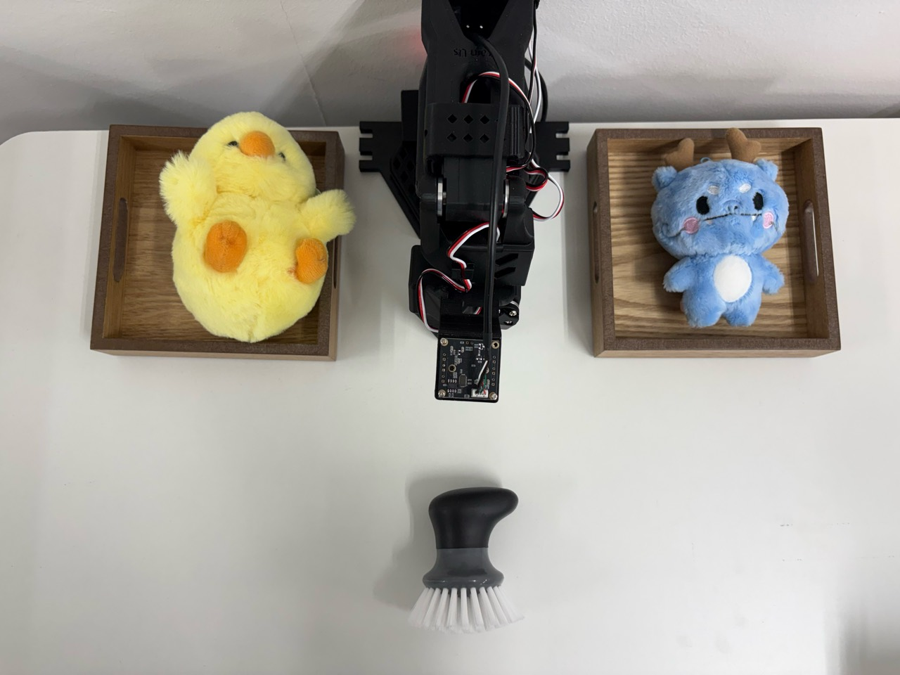
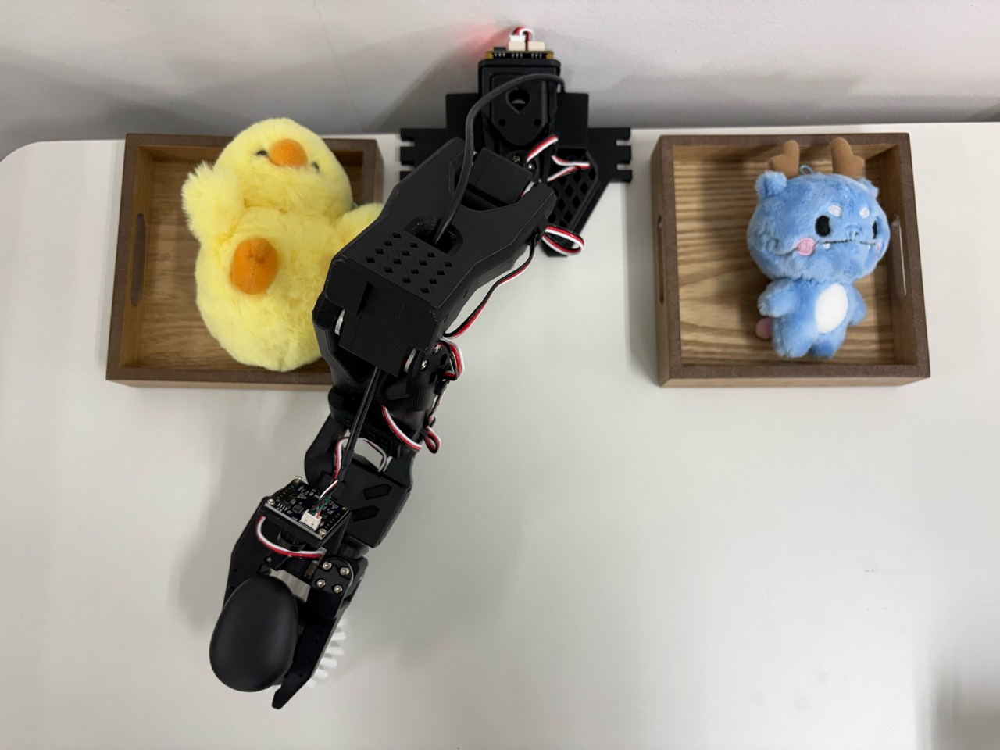
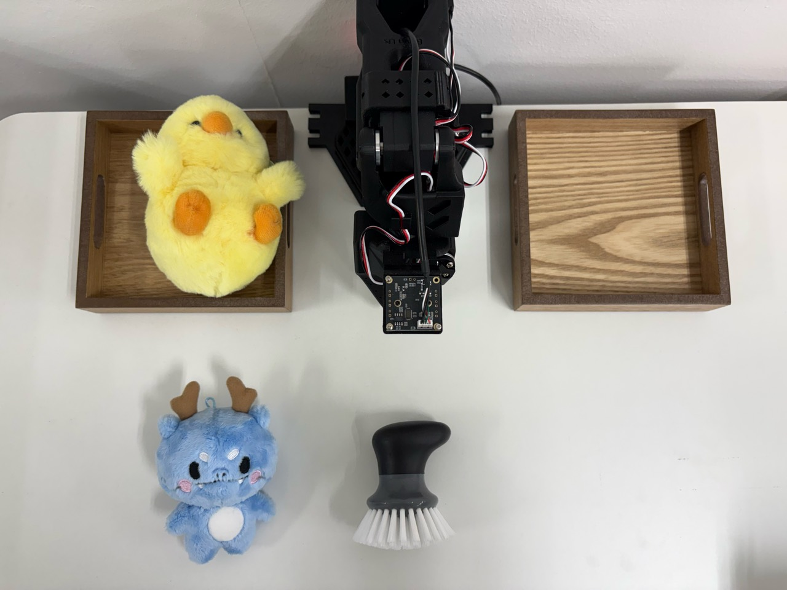

ReuseMemOne Memory, Multiple Goals in Robot Manipulation
Yoonseok Kang · Dayeon Jung · Seunghoon Jeon · Wonjib Kim · Dongchul Park
Chung-Ang University
A robot can record what it sees before it knows what it will be asked to do. ReuseMem learns to use the same observations for different requests, even as earlier actions change the scene.
The robot sees what is inside each case and where each one starts. After the cases are closed and moved, that same record guides three requests.
What the robot sawBefore any request
The open cases reveal their contents and starting positions.
Where the robot acts nowThree later requests
The cases are now closed and have moved. Choose a request to see its outcome.
How ReuseMem works
The Writer records visual observations before the goal is known. For each new request, the Reader retrieves relevant past evidence from the same bank. The policy combines it with the current view to generate the next action.
Reuse one record across goals
Record before goals are known and use the same bank to act as the scene changes.
Learn which evidence helps action
The Reader learns to select past observations that help predict expert actions across different current states.
Reuse visual features and computation
Share repeated appearances while preserving when each was seen, and reuse fixed memory projections within each action-sampling call.
Real-world manipulation
One original position answers three requests: which toy to move, where to brush, and where to return it.
Observe the original positions

Move the requested toy

Brush the original spot

Return the toy
In each of the two SO101 scenarios, ReuseMem completed all three independent requests on 14 of 20 recordings and completed 13 of 20 sequences without a reset.
Simulation results
Four RoboMME-based tasks test whether the same recording supports two distinct goals involving event timing, placement order, hidden identity, or a temporary visual cue.
All-goal requires both requests to succeed in separate runs from the same post-recording state. Sequence requires both requests to succeed in one run without a reset.
At 2,048 entries, feature sharing uses 43.98 MiB of retained memory compared with 66.38 MiB without sharing. A new request takes 175 ms from receipt to the first dispatched command on an RTX 5090. Measurement details
Citation
@misc{kang2026reusemem,
title = {ReuseMem: One Memory, Multiple Goals in Robot Manipulation},
author = {Yoonseok Kang and Dayeon Jung and Seunghoon Jeon and
Wonjib Kim and Dongchul Park},
year = {2026},
eprint = {2611.21115},
archivePrefix = {arXiv},
primaryClass = {cs.RO},
url = {https://arxiv.org/abs/2611.21115}
}